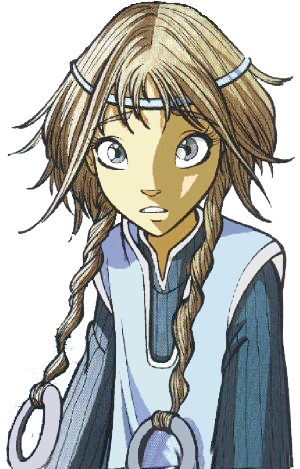

Королева Меридиана
Элион Браун
Элион Эсканор
Элион Браун является трогательной, доброй и заботливой девочкой-подростком с длинными русыми волосами, заплетенными в две косы. Она дружелюбная,общительная и умная, но иногда может быть социально неуклюжей, замкнутой и застенчивой.Она немного наивна и непосредственна и тем не менее может вести себя,как Леди.Правдива,после лжи Фобоса и чар Седрика стала меньше доверять людям.
Настоящая фамилия Элион - Эсканор. Она — королева Меридиана и Свет Меридиана. Родилась она на Меридиане, в королевской семье, и являлась единственной законной наследницей. Она была не единственным ребёнком в семье — у неё был старший брат Фобос. После смерти родителей, Галгейта похитила маленькое дитё, чтобы спасти от Фобоса и не дать ему украсть волшебные силы Элион. Элион выросла обычной девушкой в семье Браунов, Меридианцев, которых Элион считала своими настоящими родителями. Она ничего не знала о Меридиане или своей настоящей личности.
Элион и Корнелия стали хорошими подругами, также Элион подружилась и с остальными чародейками. В мультсериале у Элион также была подруга Элкми. Когда Седрик появляется на Земле, Элион тут же влюбляется в него и частенько приходит помочь ему в книжном магазине. Седрик рассказывает Элион о её истинном происхожднии и настраивает против стражниц. Он учит её пользоваться своей силой и отправляется вместе с ней на Меридиан.
После долгого пребывания на стороне Фобоса, Элион начала понимать, что тот лжёт, и в конечном счёте помогла чародейкам победить своего злого брата. После заключения брата в тюрьму Элион остаётся в Меридиане и занимает своё законное место на троне.